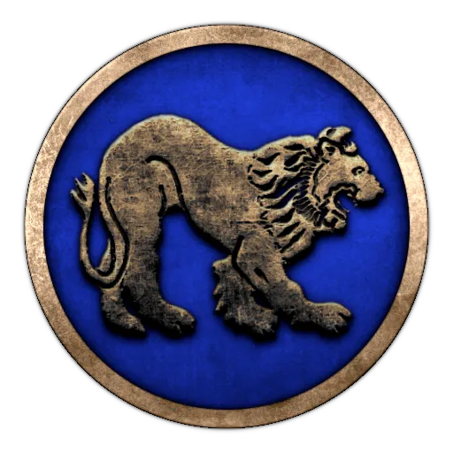
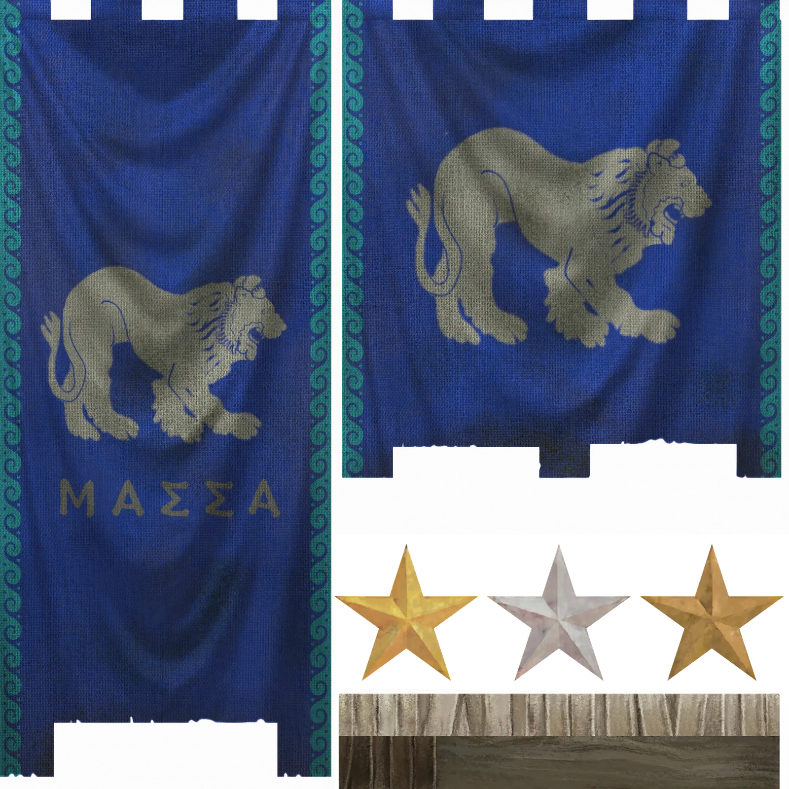
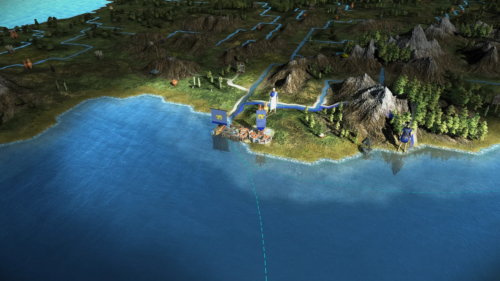
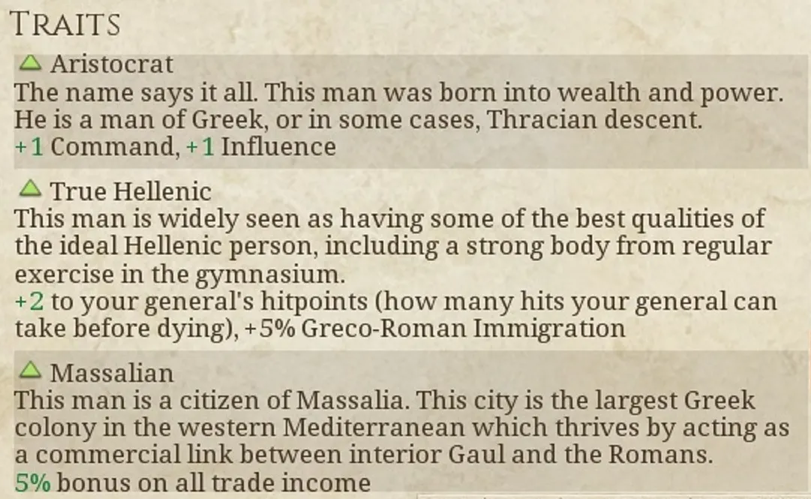
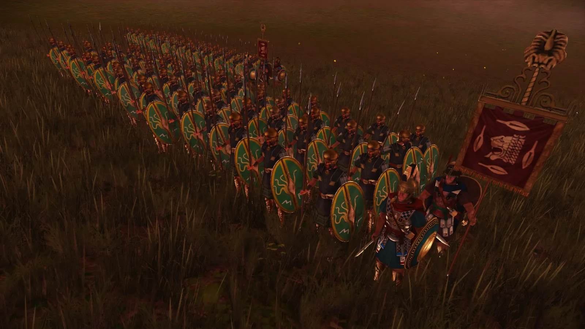

RTR: Imperium Surrectum
RTR: Imperium SurrectumMassalia
2022-02-14 · Rex Basiliscus

"The government under which the Massaliotes live is aristocratic, and of all aristocracies theirs is the best ordered" – Strabo, *The Geography*, 4.1.5
The Barbarians would seek to scare us, with their harsh language, their strange rituals, their curious outfits, and their fierce warriors. But we are no strangers to these shores. We will not be frightened. It is now three centuries since Protis first came from Phokaia, the mother city, and ensnared the heart of Gyptis, the daughter of Nannus, King of the Ligurians. The King, perhaps seeing an opportunity in their union, gifted the newlyweds enough land for a city, and from this, Massalia was born. Our fortunes rose as Phokaia's declined – when it fell to the Persians (545 BC), fresh waves of settlers arrived, preferring our benevolent rule to that of the Achaemenid Emperors.
Although the Gallic shore is perhaps not the most glamourous of locations, we have managed to carve out our niche, enriching ourselves as the primary trade stopover between Gaul and the Mediterranean states. Situated near the mouth of the Rhodanos (Rhone) River, we are well-positioned for trade far into the interior of Gaul, and our sizeable fleet keeps at bay the temptation of would-be pirates and raiders from the seawards side. What of our strength of arms on terra firma? We are not a first-rate military power, but we are ready defend ourselves, if need be - we are, after all, trading with the Gauls. Our gallant citizens stand ready to form ranks as hoplites, and our coffers are deep enough to supply us with a strong mercenary force, should the need arise.
We have built mighty walls to protect the city and have even pushed back the Gauls somewhat over the years, founding nearby fortress colonies to protect our corner of Gaul. We will not prove any pickings, should invaders seek our lands.
What, then, does the future hold? We have always been content to keep the Gauls at bay and be ignored by all the rest while making money off their merchants. But the winds of change are blowing, and perhaps this course will prove difficult to maintain. To the north, the Gauls, ever restless, are stirring. They seem more hostile than in previous generations, and may prove less content to tolerate our presence. And to the south, new powers are rising: Rome and Carthage, the new rulers of the Western Mediterranean, look set for a struggle for the ages. Who can tell what part we will play in that, and where we will stand once the contest is decided?
*Chairete*!
It is not in the nature of modders to cater to fans wishes, but oh well -- the time has come where the pleas of our fans reached the great royal halls of Caria itself, bringing one disgruntled historian to terms and having him relinquish his veto powers in order for today's faction focus to come to light ...
Behold! The extremely interesting little faction of Massalia! Isolated from the rest of the Greek world, surrounded by barbarians: the ultimate test for RIS players.


In the midst of Keltike, Massalia stands alone. Your only ally are the Romans, but in their lust for power they may eventually betray you, too. The various Gauls to the North are a threat not only to you, but also to your colonies such as Emporion. You may choose to unite them into a small Phokaian Empire, or expand overseas.


And as a special treat, we present to you the Massaliote Thorakitai!
Massaliote Thorakitai Having drawn inspiration from the foreign lands their city was built in, the Massaliote Thorakitai look similar to the Gallic warriors they are constantly facing in battle. As a heavy infantry unit that is both strong and flexible, it can either hold firm against numerous waves of warriors or attack the flank of enemy lines. Apart from their mail and thureos shield, the Thorakitai still retain iconic elements of a Hoplite: wearing a Chalcidian type helmet, a dory (a 2-3m/ 6-9 ft spear) in their hand and a xiphos on their hip, they are ready to strike at any foe who gets too close.
HISTORICAL BACKGROUND
Sources on Thorakitai are sparse. They are mentioned by Plutarch and Polybios as part of the Achaian and Seleucid army, as soldiers equipped with body-armour or a cuirass (Plut. Phil. 9.2.; Plit. Phil. 9.5.; Pol. IV.12.3; X.29.6; XI.11.4-5;14.1;15.5). In both cases they were positioned on the flanks or alongside Illyrians, Cretan archers, Thureophoroi and other light troops and mercenaries. It’s implied that they were armed similarly to the Thureophoroi and served an equally flexible, although better armoured, role. They might have worn mail, which was adopted by various Hellenic states in the early 3rd century BC after encountering the Celtic invasion force led by Brennus.
The city-state of Massalia, however, founded around 600 BC by Phokaian colonisers in Southern Gaul, had encountered Celto-Ligurian tribes much earlier and interacted with them on a much more regular basis. Tensions between Massalia and its neighbours possibly rose around 450 BC, after the replacement of the trade-oriented Hallstatt culture with the more aggressive La-Tène-Culture in Gaul. This might have led Massalia to adopt military tactics and equipment such as mail and the thureos sooner than other poleis in Greece itself. However, Massaliote power did not rely on a particularly strong military force but rather on trade and cultural influence, selling their goods to the local tribes of the Rhône basin and importing much-needed grain. If it ever had ambitions for territorial expansion, Massalia never gained much land on its own beyond the colonies it had founded along the coast of Southern Gaul.
At the height of its power in the middle of the first century BC, Massalia’s population is estimated to have been around 20,000 people; with a force of at most 6,000 men that could be mobilized for defence, even less for potential offensive military campaigns. Until the appearance of the Romans in the Rhône basin, Massalia’s focus had been much more naval-oriented and defensive (Dietler, Archaeologies of Colonialism, p. 189). By the second half of the 2nd century BC, Massalia increasingly called the Romans for assistance in its wars against the “Barbarians”, resulting in the establishment of the Roman province of Gallia Narbonensis in 118 BC (Cic. Font. 5,13; Vell. Pat. I, 15, 5). During the civil war between Pompey and Caesar, Massalia sided with the Senate, thereby provoking a lengthy siege by Caesar in 49 BC (Caes. Civ. 2, 22). The city was overcome after a long fight, yet Caesar acknowledged its autonomy, and it remained a free city well into the imperial period (Strab. IV, 1, 5).

And this is all for today's Dev Diary. Hope you have enjoyed it as much as our historians researching it! Be sure to let us know in the a channel